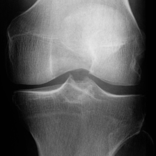
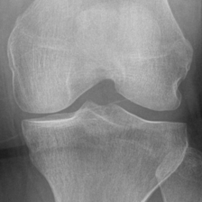
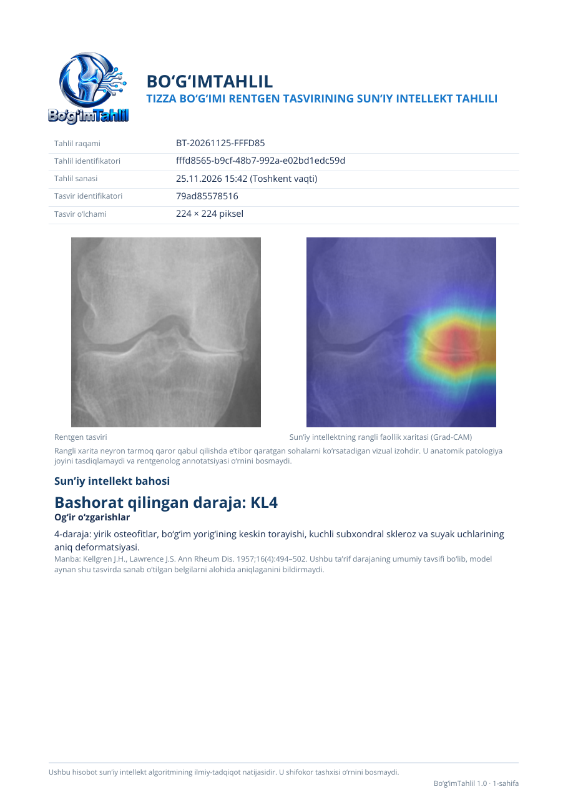
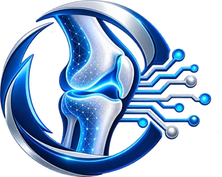

Sun’iy intellekt asosida tizza bo‘g‘imi rentgen tasvirlarini tahlil qilish tizimi
“Aniq tahlil sari aqlli qadam!”
ILMIY-TADQIQOT PLATFORMASI · VERSIYA 1.0
Muammo
Tizza osteoartriti — keng tarqalgan surunkali bo‘g‘im kasalligi
Rentgen — eng ko‘p qo‘llaniladigan va arzon tekshiruv usuli
Kellgren–Lawrence (KL) tasnifi bo‘yicha baholash tajriba va vaqt talab qiladi
Erta darajalarni (KL0–KL2) ajratish hatto mutaxassislar uchun ham qiyin

Tizza bo‘g‘imining frontal rentgen tasviri
Yechim
Bo‘g‘imTahlil — rentgen tasviridan
KL darajasigacha bir necha soniyada
1
Rentgen tasviriJPG / PNG, bitta tizza, frontal2
Tekshiruv va ishlovformat, hajm; kesmasdan 224×2243
Neyron tarmoqEfficientNet-B0 (PyTorch)4
KL0–KL4 bahosi5 daraja bo‘yicha ehtimolliklar5
Izoh va hisobotGrad-CAM xaritasi, PDFNatija — shifokorga yordamchi dastlabki baho, tashxis emas
Kellgren–Lawrence tasnifi
Model tasvirni 5 darajadan biriga baholaydi

KL0Belgilar yo‘qKL2Yengil
Datasetdagi haqiqiy rentgen tasvirlari (mutaxassis bahosi bilan) · Kellgren J.H., Lawrence J.S., 1957
1Bosh sahifa
Model holati, imkoniyatlar va KL darajalari — o‘zbek tilida, mobil qurilmalarga moslashgan
2Rentgen tasvirini yuklash
Format, hajm va yaxlitlik serverda tekshiriladi; foydalanuvchi proyeksiyani tasdiqlaydi
3Sun’iy intellekt bahosi
Bashorat qilingan KL daraja va besh daraja bo‘yicha model ehtimolliklari
4Grad-CAM — model e’tibor qaratgan sohalar
Vizual izoh: rangli xarita patologiya joyini tasdiqlamaydi

5PDF hisobot va tahlillar tarixi
A4 hisobot o‘zbek tilida · tarix faqat joriy sessiyada, ma’lumotlar 24 soatdan so‘ng o‘chiriladi
6Sun’iy intellekt modeli haqida
Pasport, dataset, o‘qitish grafiklari, qiyos va xatoliklar jadvali — faqat haqiqiy tajriba fayllaridan
Model qanday yaratildi
8 260 ta haqiqiy tizza rentgenida o‘qitildi
Knee Osteoarthritis Severity Grading Dataset (Chen, 2018; Osteoarthritis Initiative asosida) ·
o‘qitish 5 778 · tekshiruv 826 · mustaqil sinov 1 656 · Google Colab, T4 GPU, transfer learning
Tekshiruv to‘plamida taqqoslash (Macro F1):
TANLANDI
EfficientNet-B0
faqat tekshiruv natijasi bo‘yicha; sinov to‘plami tanlovda ishlatilmagan
Mustaqil sinov · 1 656 ta rentgen
Model samaradorligi
0Accuracyumumiy aniqlik
0Macro F1sinflar bo‘yicha o‘rtacha
0QWKdarajalar mosligi
<1 sTahlil vaqtioddiy kompyuter (CPU)
QWK 0,826 — model xato qilganda ham asosan qo‘shni darajaga adashadi.
Eng qiyin qism — erta darajalar: KL0–KL2 o‘zaro chalkashishi 35,7%.
Texnologiyalar
React · TypeScriptFastAPI · SQLitePyTorch
EfficientNet-B0Grad-CAMReportLab PDFGoogle Colab GPU
Ishonchlilik va cheklovlar
✓Soxta natija yo‘q: model bo‘lmasa tahlil bajarilmaydi
✓Anonim sessiya, shaxsiy ma’lumot so‘ralmaydi
!Datasetda bemor ID yo‘q — tashqi validatsiya kerak
!Ilmiy-tadqiqot prototipi — klinik tashxis vositasi emas

“Aniq tahlil sari aqlli qadam!”
Bo‘g‘imTahlil 1.0 — sun’iy intellekt asosidagi ilmiy-tadqiqot platformasi
Natijalar shifokor tashxisi o‘rnini bosmaydi · © 2026
Bo‘g‘imTahlil